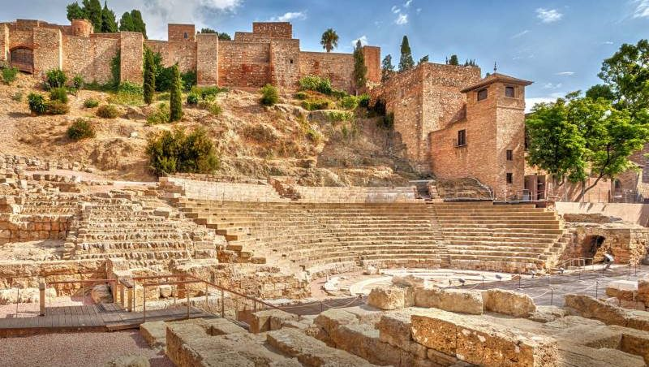
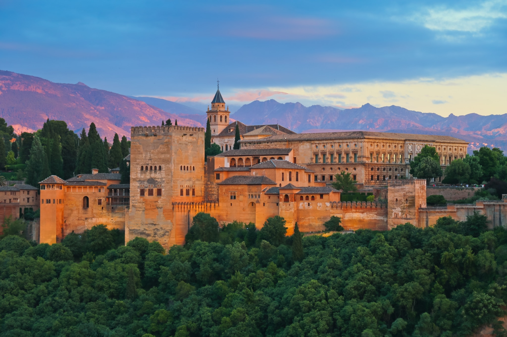
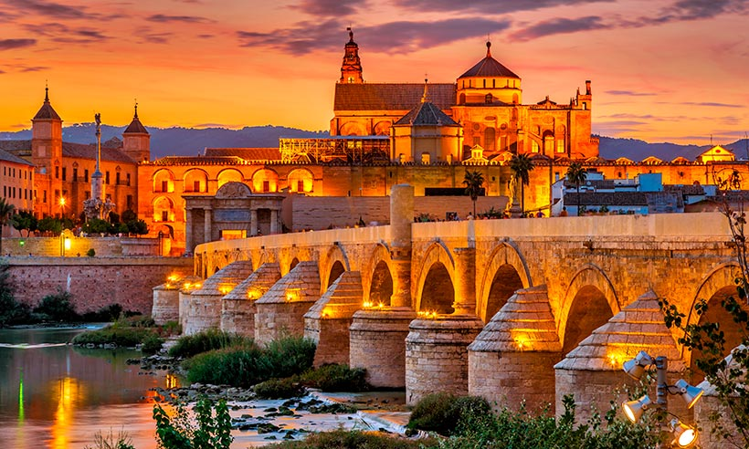
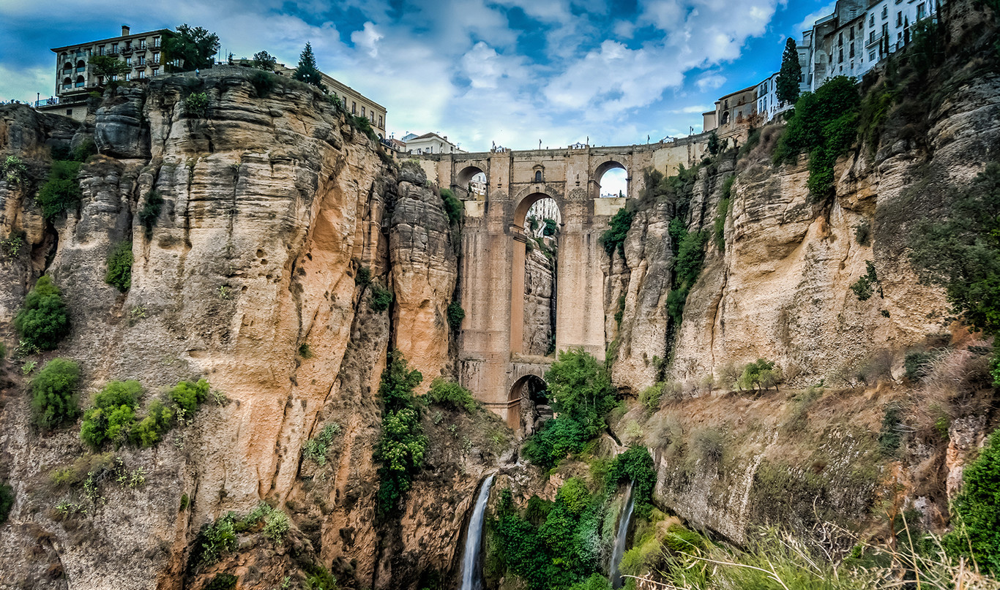

Alcazaba de Málaga
La alcazaba de Málaga es una fortificación palaciega de la época islámica, construida sobre una anterior fortificación de origen fenicio-púnico

Alhambra de Granada
La Alhambra es un complejo monumental sobre una ciudad palatina andalusí situado en Granada, España.
Consiste en un conjunto de antiguos palacios, jardines y fortaleza inicialmente concebido para alojar al emir y la corte del Reino nazarí,
más tarde como residencia real castellana y de sus representantes

Mezquita de Cordoba
Monumento más importante de Córdoba, y también de toda la arquitectura andalusí, junto con la Alhambra, así como el más emblemático del arte omeya hispanomusulmán

Puente nuevo Ronda
El puente Nuevo es el monumento más emblemático de la ciudad malagueña de Ronda. Construido entre 1751 y 1793, hasta 1839 fue el puente más alto del mundo con una altura de 98 metros